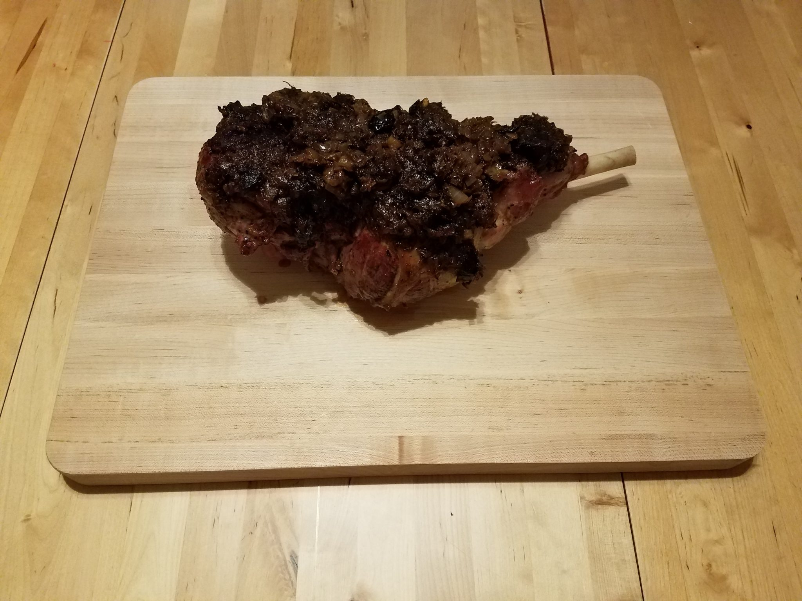
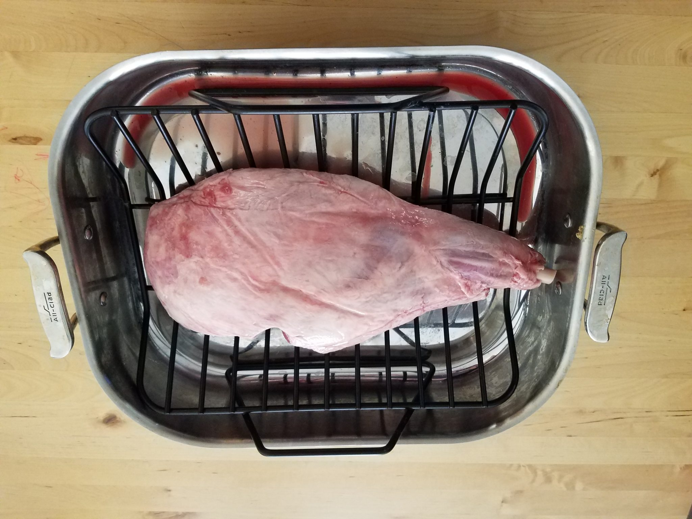
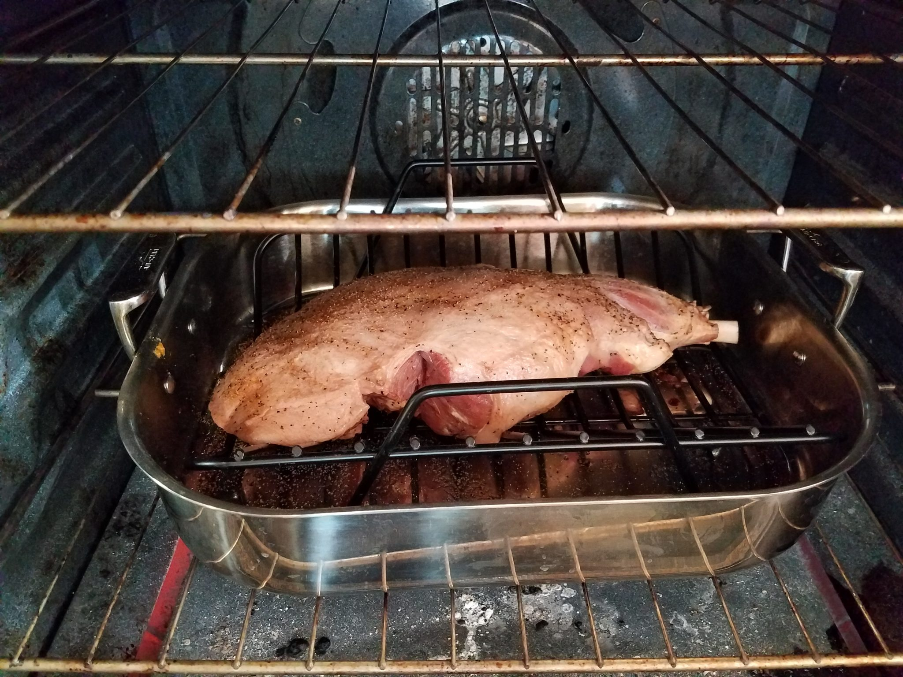
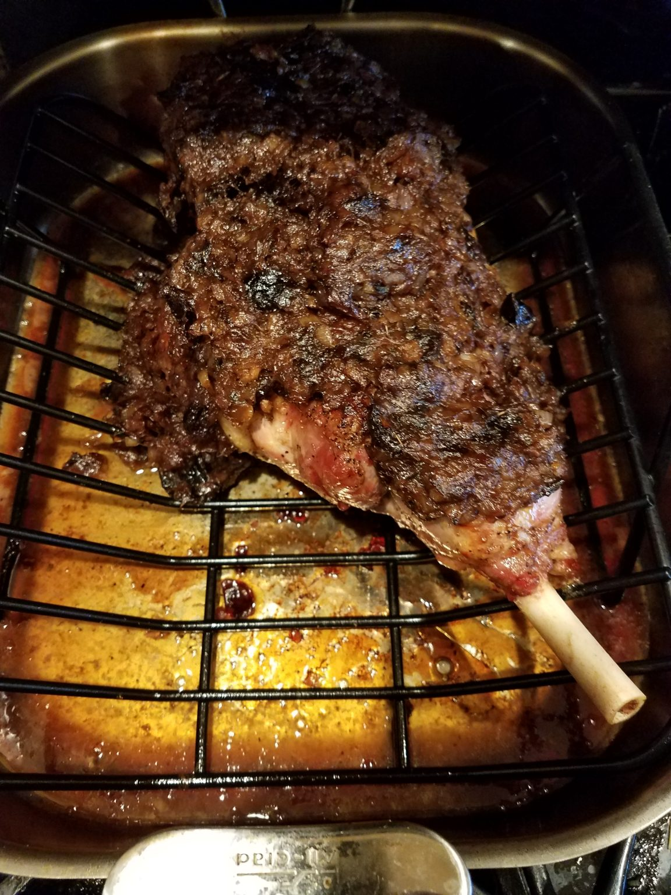
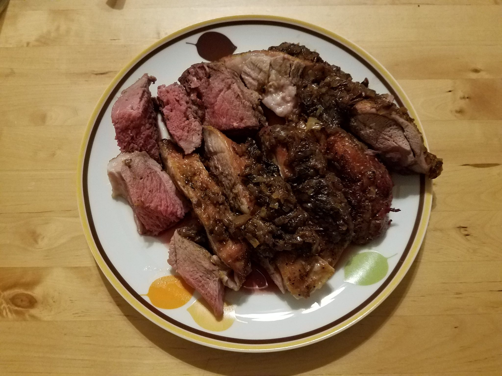

Parthian Lamb – Agnum Particum

The following Parthian Lamb recipe is based on two different Roman recipes from Apicius (8.6.8 and 8.6.10). The
reason it is called Parthian is not because the recipe comes from Parthia (Persia), but rather because it uses a
spice called Laser Parthicum, which replaced Lybian Silphium when it went extinct in the 1st century CE. Laser
Parthicum is Asafoetida, which originates in Persia. There is an alternative reading in another manuscript of
Apicius which reads pasticum (suckling) instead of Particum (Parthian), which refers to the young age of the
lamb and not the spice used in the recipe.
Roasted leg of lamb, based on two Roman recipes in Apicius (8.6.8 and 8.6.10). This recipe is a great
reenactment of what the Passover Sacrifice might have looked and tasted like during the Second Temple period, in
Judaea.
The original Apicius recipe called for liquamen, a classic Roman fish sauce. Since I am allergic to fish and
cannot make or eat liquamen I have substituted it with wine vinegar. For a more authentic taste use the
following ingredients:
Retsina wine from Greece, which is fermented in pitchers covered with resin, as the original Roman wines were,
instead of oak barrels. The Romans most prized wines were from Greece. A good brand of Retsina wine is Kourtaki
which is sold in many wine stores in the US, such as Total Wine and Bevmo.
Instructions

Place the lamb on a roasting pan rack inside a roasting pan with the fat side up and place in the center of the oven.
Rub the leg of lamb on both sides with olive oil. Then rub with salt, black pepper and ground coriander. The spices will stick to the olive oil and should cover the whole leg.
A bone-in leg of lamb will roast to medium rare in about 18-20 minutes per every pound. So if your leg of lamb weighs 5 pounds then it will roast in total for 1 hour and 40 minutes. You should weigh your leg of lamb and adjust the timing according to its weight.

Preheat the oven to 400 degrees F. Prepare to place the lamb on a roasting pan rack inside the roasting pan.
Baste the whole leg in white wine.
Roast the lamb at 400 degrees F for 15 minutes on regular bake mode without a fan.
After 15 minutes, reduce the temperature of the oven to 350 degrees F. Continue roasting the lamb for another 1 hour and 10 minutes.
Every 20 minutes baste the leg in white wine. Make sure to cover the whole leg with wine. There is no need to flip the leg over.

Check the internal temperature of the lamb every 20 minutes with a thermometer by poking it in a few places. The internal temperature you are trying to reach is 130 - 135 degrees F, which is medium rare. If you like your meat cooked to medium then keep roasting until the temperature reaches 145 degrees F. The timing specified in this recipe is for medium rare.
For the last 15 minutes of roasting turn the convection feature of your oven on so that the fan will run. This will crisp up the fat on the leg. If your oven does not have a fan, then just ignore this step.
Roast the lamb for 5 minutes with the fan on. Then take the sauce that you prepared by now and cover with it the whole leg of lamb. Roast for the last 10 minutes with the sauce on the leg.

Measure the internal temperature of the lamb before taking it out of the oven and make sure it has reached 130 - 135 degrees F for a perfect medium rare.
Remove the pan with the lamb out of the oven and let it rest for 15-20 minutes.
Carve the meat of the lamb, slice and serve with the roasted sauce.